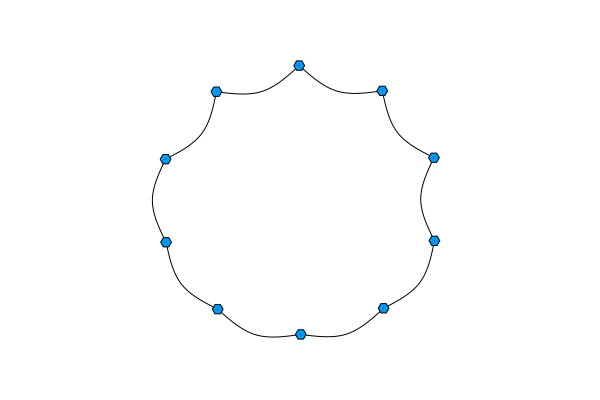

Homework 1: Extending polynomial the other way
Extend the original polynomial function to the case where x is a square matrix. Create a function called circlemat, that returns nxn matrix $A(n)$ with the following elements
\[\left[A(n)\right]_{ij} = \begin{cases} 1 &\text{if } (i = j-1 \land j > 1) \lor (i = n \land j=1) \\ 1 &\text{if } (i = j+1 \land j < n) \lor (i = 1 \land j=n) \\ 0 & \text{ otherwise} \end{cases}\]
and evaluate the polynomial
\[f(A) = I + A + A^2 + A^3.\]
, at point $A = A(10)$.
HINTS for matrix definition: You can try one of these options:
- create matrix with all zeros with
zeros(n,n), use two nested for loops going in ranges1:nand if condition with logical or||, and&& - employ array comprehension with nested loops
[expression for i in 1:n, j in 1:n]and ternary operatorcondition ? true branch : false
HINTS for polynomial extension:
- extend the original example (one with for-loop) to initialize the
accumulatorvariable with matrix of proper size (usesizefunction to get the dimension), using argument typing forxis preferred to distinguish individual implementations<: AbstractMatrix
or
- test later defined
polynomialmethods, that may work out of the box
Solution:
Nothing to see here.
How to submit?
Put all the code for the exercise above in a file called hw.jl and upload it to BRUTE. If you have any questions, write an email to one of the lab instructors of the course.
Voluntary
Install GraphRecipes and Plots packages into the environment defined during the lecture and figure out, how to plot the graph defined by adjacency matrix A from the homework.
HINTS:
- There is help command inside the the pkg mod of the REPL. Type
? addto find out how to install a package. Note that both pkgs are registered. - Follow a guide in the
Plotspkg's documentation, which is accessible throughdocsicon on top of the README in the GitHub repository. Direct link.
Solution:
Activate the environment in pkg mode, if it is not currently active.
pkg> activate .Installing pkgs is achieved using the add command. Running ] ? add returns a short piece of documentation for this command:
pkg> ? add
[...]
Examples
pkg> add Example # most commonly used for registered pkgs (installs usually the latest release)
pkg> add Example@0.5 # install with some specific version (realized through git tags)
pkg> add Example#master # install from master branch directly
pkg> add Example#c37b675 # install from specific git commit
pkg> add https://github.com/JuliaLang/Example.jl#master # install from specific remote repository (when pkg is not registered)
pkg> add git@github.com:JuliaLang/Example.jl.git # same as above but using the ssh protocol
pkg> add Example=7876af07-990d-54b4-ab0e-23690620f79a # when there are multiple pkgs with the same nameAs the both Plots and GraphRecipes are registered and we don't have any version requirements, we will use the first option.
pkg> add Plots
pkg> add GraphRecipesThis process downloads the pkgs and triggers some build steps, if for example some binary dependencies are needed. The process duration depends on the "freshness" of Julia installation and the size of each pkg. With Plots being quite dependency heavy, expect few minutes. After the installation is complete we can check the updated environment with the status command.
pkg> statusThe plotting itself as easy as calling the graphplot function on our adjacency matrix.
julia> using GraphRecipes, Plotsjulia> graphplot(A)Plot{Plots.GRBackend() n=21} Captured extra kwargs: Series{1}: num_edges_nodes: (10, 10) Series{2}: num_edges_nodes: (10, 10) Series{3}: num_edges_nodes: (10, 10) Series{4}: num_edges_nodes: (10, 10) Series{5}: num_edges_nodes: (10, 10) Series{6}: num_edges_nodes: (10, 10) Series{7}: num_edges_nodes: (10, 10) Series{8}: num_edges_nodes: (10, 10) Series{9}: num_edges_nodes: (10, 10) Series{10}: num_edges_nodes: (10, 10)